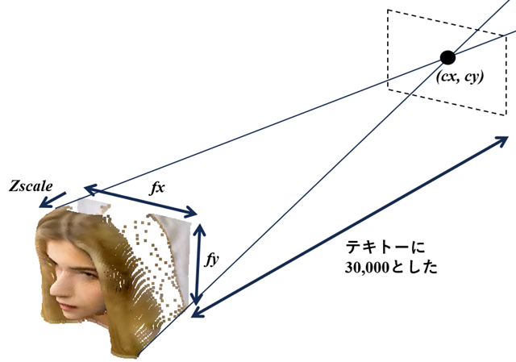
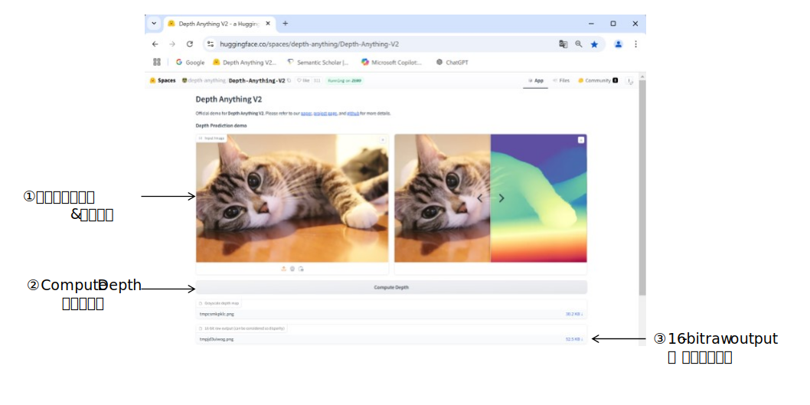

RGB画像とdepth画像を指定して、3Dオブジェクトを表示します。
入力画像
3Dオブジェクト表示
pip install opencv-python open3d
python RgbDepth.py (RGB画像ファイル) (depth画像ファイル) [(Zscale) (fx) (fy) (cx) (cy)]
※ ピクセルとz値の比率が不明のため、Zscale引数で調整します。
その他のパラメータは下図参照

| 操作 | 機能 |
|---|---|
| 左ボタン押下＋ドラッグ | 3Dモデルの回転 |
| ホイールボタン押下＋ドラッグ | 3Dモデルの移動 |
| ホイール回転 | 3Dモデルの拡大・縮小 |
| PrintScreenキー押下 | スクリーンショット保存 |
| ウィンドウ閉じるボタン押下 | プログラム終了 |
Depth Anything V2 などを使って画像からdepth画像を作成する。
https://huggingface.co/spaces/depth-anything/Depth-Anything-V2
